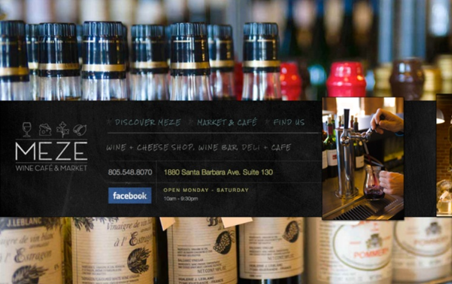
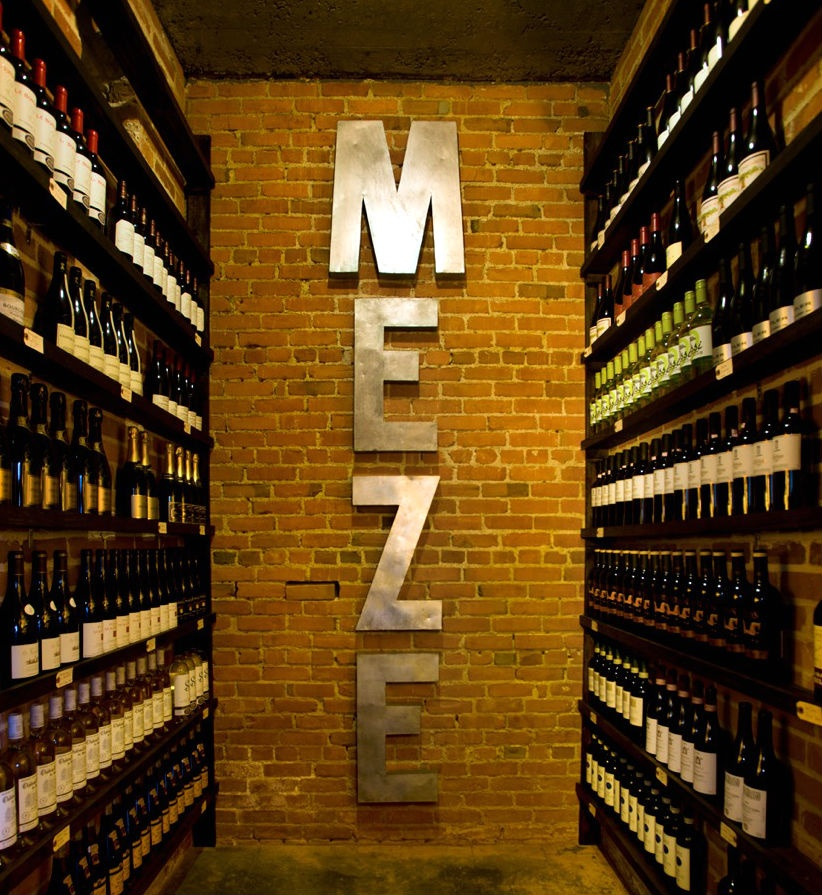
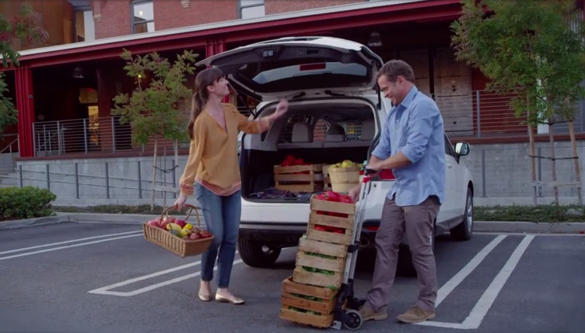
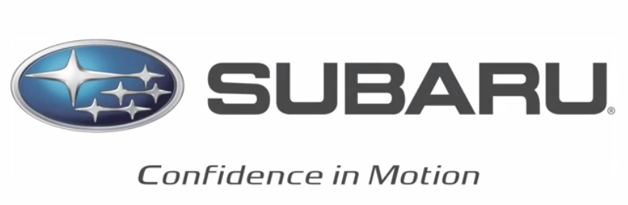
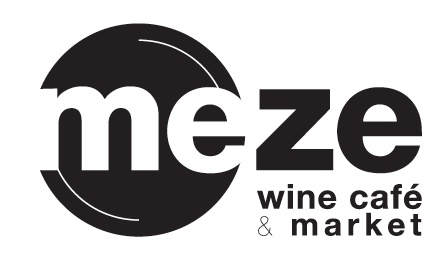
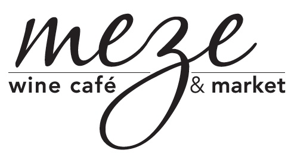
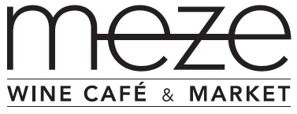
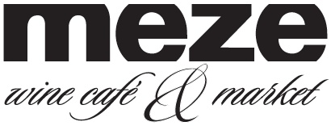
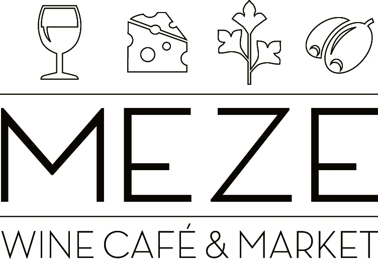

MEZE WINE CAFÉ & MARKET / San Luis Obispo, California
Business Concept & Proprietorship
Business / Brand / Experience
Development of the MEZE Wine Café & Market business concept in San Luis Obispo. This project demonstrates work extending beyond traditional brand execution into business concept development and entrepreneurship.
THE WORK








